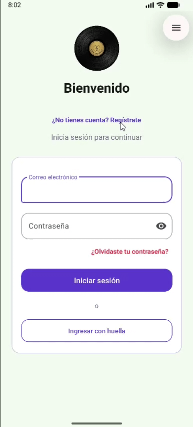
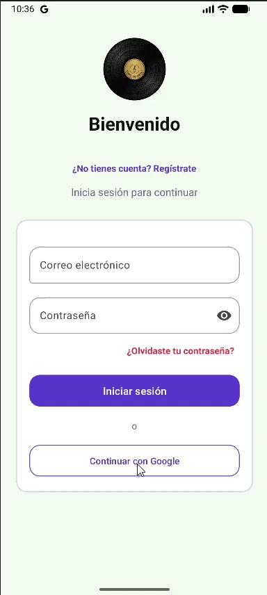
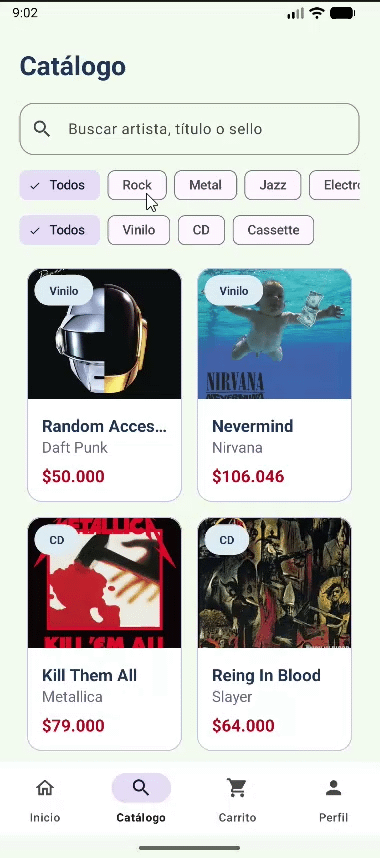
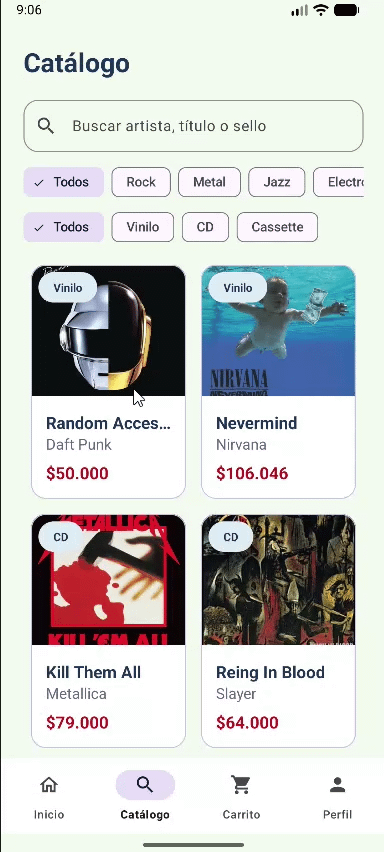
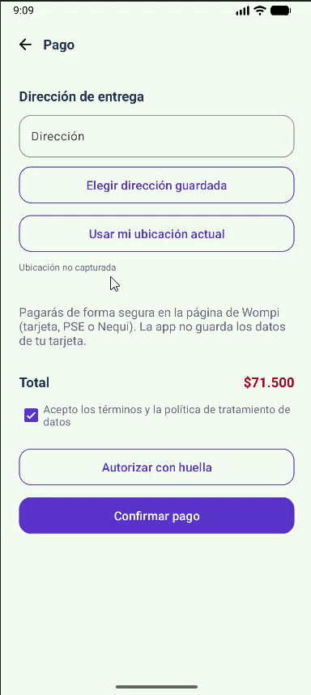
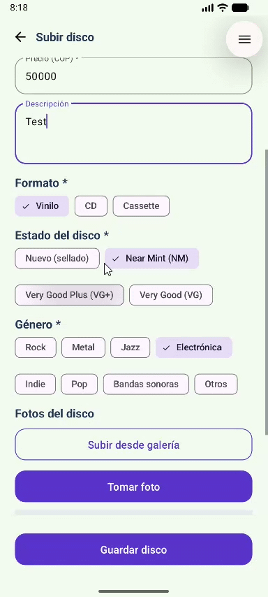
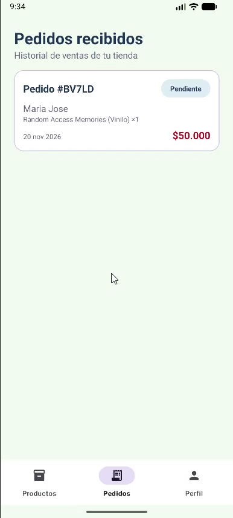
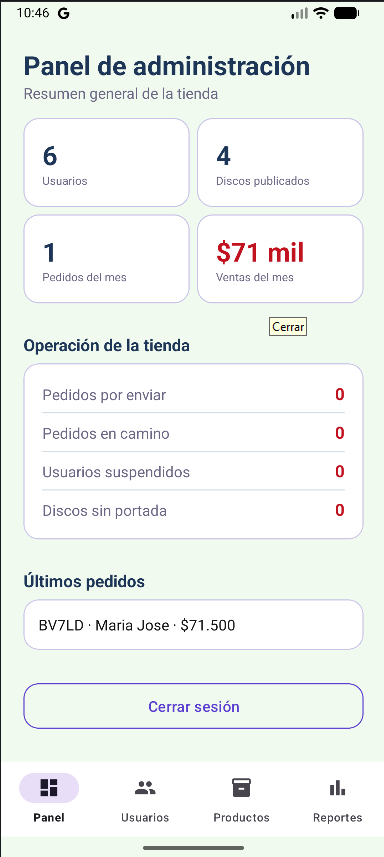

Cámara y Galería
Se solicita únicamente al subir fotos de perfil o capturar evidencia física de los vinilos y CDs en venta.
Guía visual paso a paso para operar cada módulo de la aplicación móvil: desde el registro hasta la compra con geolocalización, publicación con cámara y moderación administrativa.
Requisitos previos: dispositivo con Android 8.0 (API 26) o superior y conexión a internet.
Al abrir la app por primera vez, selecciona Create account. Ingresa tu correo electrónico, contraseña y acepta explícitamente la política de tratamiento de datos personales (cumplimiento Ley 1581 de 2012).

En la pantalla de Login puedes ingresar con tu correo/contraseña o usar el botón de Google Sign-In

Explora el catálogo, arma tu carrito, define tu ubicación en el mapa y paga de forma segura.
Desde la pantalla principal (Home / Catalog), busca discos por artista, título o sello discográfico. Usa los filtros rápidos navega por géneros como Rock, Electronic, Indie, Jazz y Soundtracks.

Agrega uno o varios álbumes al carrito. Desde la pestaña Cart puedes aumentar o disminuir unidades, eliminar ítems y revisar el desglose transparente de subtotal, IVA y costos de envío antes de pagar.

Al confirmar el pedido, concede el permiso de ubicación para fijar tu dirección exacta de entrega en el mapa. Antes de procesar el pago en la pasarela, la app solicitará tu huella dactilar como capa extra de seguridad.

Publica tus vinilos y CDs con evidencia fotográfica real y gestiona las órdenes de tus clientes.
En la barra inferior del vendedor selecciona Upload. Completa los campos obligatorios: título del álbum, artista, formato, precio y el grado de conservación (New / Sealed, Near Mint, Very Good Plus).

Desde Productos puedes editar precios, actualizar el stock o retirar publicaciones. En la pestaña Pedidos visualizas las compras recibidas para preparar y despachar cada disco.

Supervisión de métricas en tiempo real, control de roles y moderación del catálogo.
Al iniciar sesión como Administrador accedes al resumen operativo: total de usuarios registrados, discos publicados, ventas del mes, pedidos pendientes de envío, pedidos despachados, usuarios suspendidos y productos sin fotografía.

Desde las pestañas inferiores del panel administrativo puedes buscar cuentas por nombre, correo o rol, asignar permisos (Comprador, Vendedor, Administrador) y suspender o reactivar usuarios que incumplan las normas de la plataforma.

Resumen de los permisos nativos que utiliza la app y las garantías aplicadas en Colombia.
Se solicita únicamente al subir fotos de perfil o capturar evidencia física de los vinilos y CDs en venta.
Utilizado exclusivamente durante el checkout para fijar la dirección de entrega en el mapa con coordenadas exactas.
Validación biométrica antes del pago (Circular 006 SIC), cifrado de datos (Ley 1581) y botón de retracto en compras (Ley 1480).
Regresa a la página principal para descargar el instalador APK o revisar los detalles del proyecto.